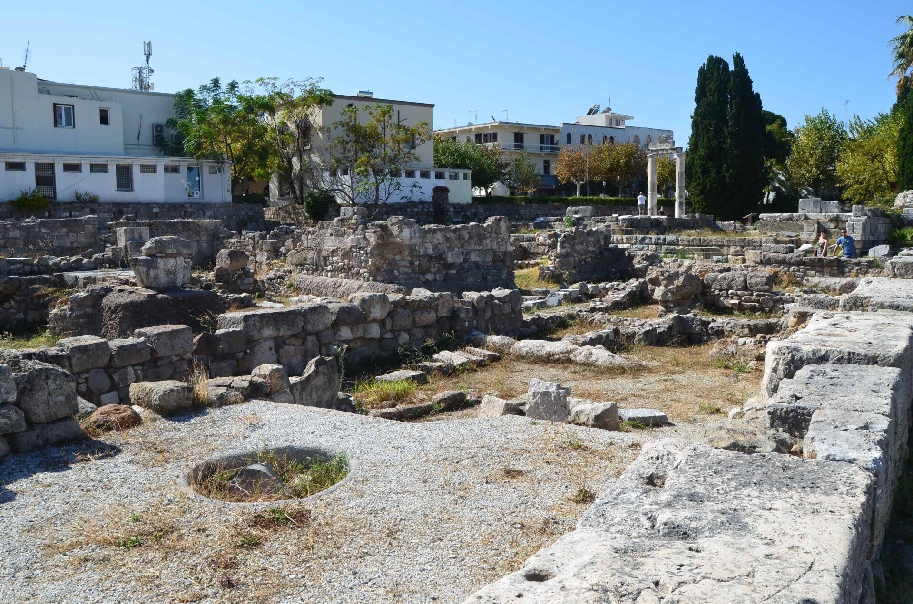
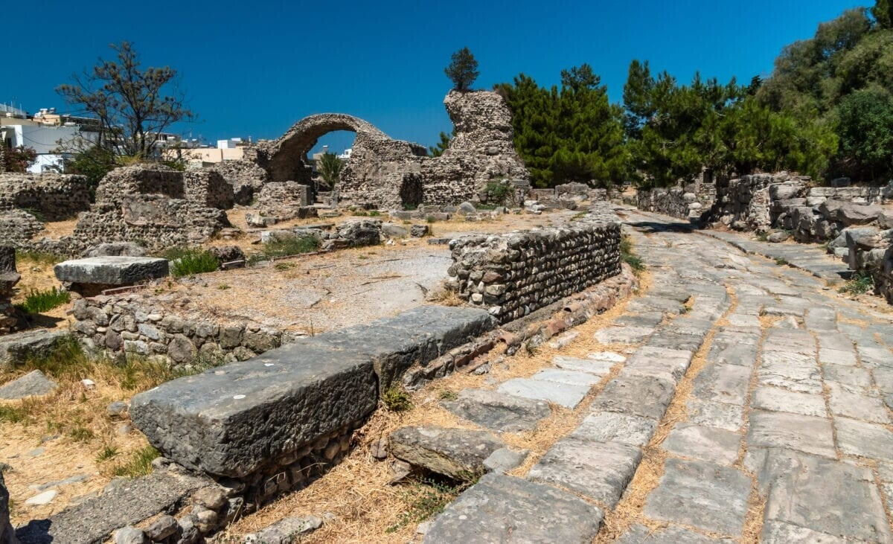

Agora – oude markt
Het oude hart van Kos-stad: restanten van de grootste marktplaats van de regio.
Wat was de Agora?
Midden in Kos-stad liggen de restanten van de oude Agora – de marktplaats die ooit de grootste van de omgeving was. Agora betekent letterlijk verzamelplaats.
Hier speelde het sociale leven zich af: handel, gesprekken en vergaderingen van vrije burgers.
Van ontmoetingsplaats tot markt
In eerste instantie was de Agora een ontmoetings- en vergaderplaats. Hier kwam ook de Ekklèsia (volksvergadering) bijeen. Later werd het steeds meer de plek voor handel en dagelijks leven.
Rondom stonden vaak tempels. Mannen ontmoetten elkaar op het plein of in de schaduw van de stoai (zuilenhallen) – vooral om te praten.

Aardbevingen en herontdekking
Grote delen van de Agora gingen verloren bij aardbevingen in de 5e en 6e eeuw na Christus. Na de zware aardbeving van 1933 kwamen veel resten weer bloot te liggen.
Italiaanse archeologen (Kos stond toen onder Italiaans bestuur) groeven verder. Zo zie je vandaag nog winkels, zuilen en straten uit de oudheid – midden in de moderne stad.

Openingstijden
Toegang is gratis. Meestal gelden deze tijden (controleer lokaal bij de ingang):
Tijden kunnen wisselen per seizoen. Dinsdag is de vaste sluitingsdag van veel archeologische sites op Kos.
Bezoeken
Je loopt er zo naartoe: centraal in Kos-stad, dicht bij de haven en de winkelstraten. Geen ticket nodig – het is een openluchtterrein.